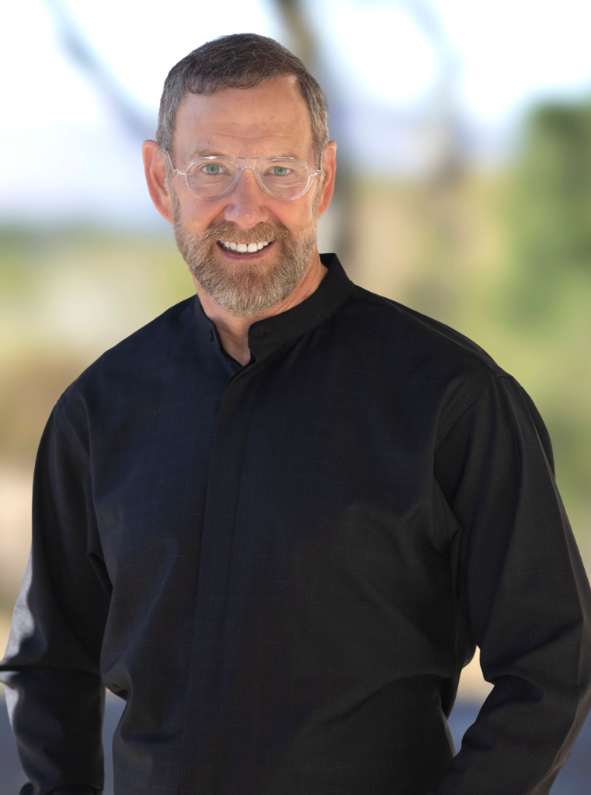
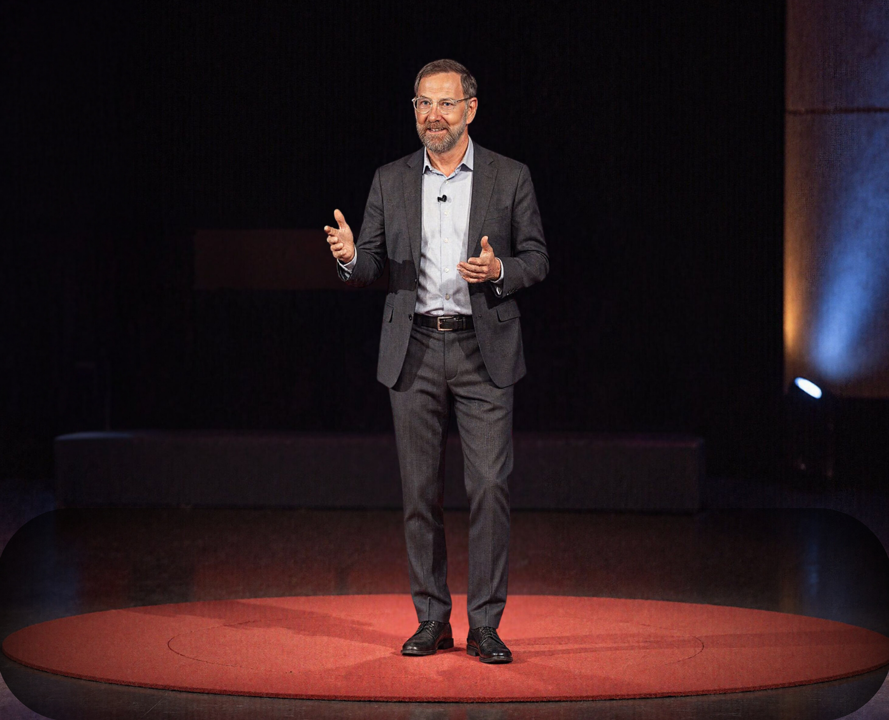

The beginning
Curiosity led the way.
Alan Elliott began his career in academia. While teaching at several universities, he consulted for a range of industries and found himself especially drawn to travel and tourism.
He went on to create Myriad, a company focused on international travel marketing with private clients and governments on five continents. In 2016, Myriad became part of MMGY Global's portfolio of companies.


Looking forward
Making room for new ideas.
During the COVID crisis, Alan Elliott created The Sigmund Project as a way to encourage innovation and collaboration across the tourism industry.
His experience across global nonprofit and startup boards informs the perspective he brings to audiences around the world.
Visit The Sigmund Project